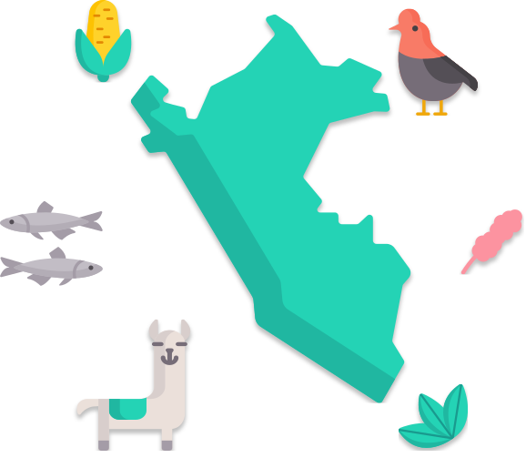

According to The Ecological Society of America, Ecology is defined as: "The study of the relationships between living organisms, including humans, and their physical environment; it seeks to understand the vital connections between plants and animals and the world around them. Ecology also provides information about the benefits of ecosystems and how we can use Earth’s resources in ways that leave the environment healthy for future generations." While Statistics come to be "the science of collecting, displaying, and analysing data" according to Oxford Reference. Thus, this website aims to list solutions and show data that raise awareness about how Peruvians are influencing our environment, how we impact its resources and how we influence climate change, based on open data.
See Statistics See Solutions